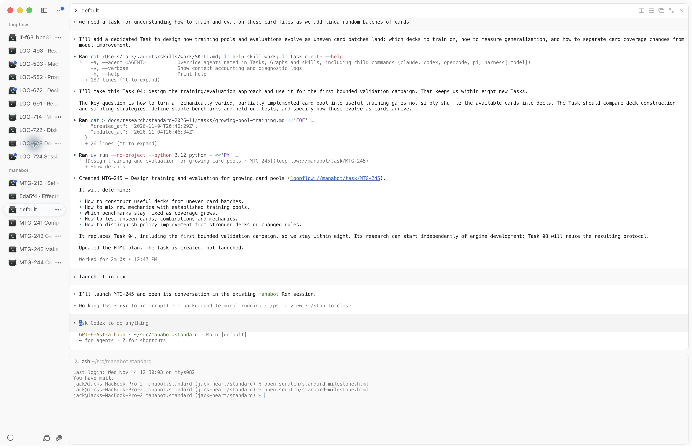
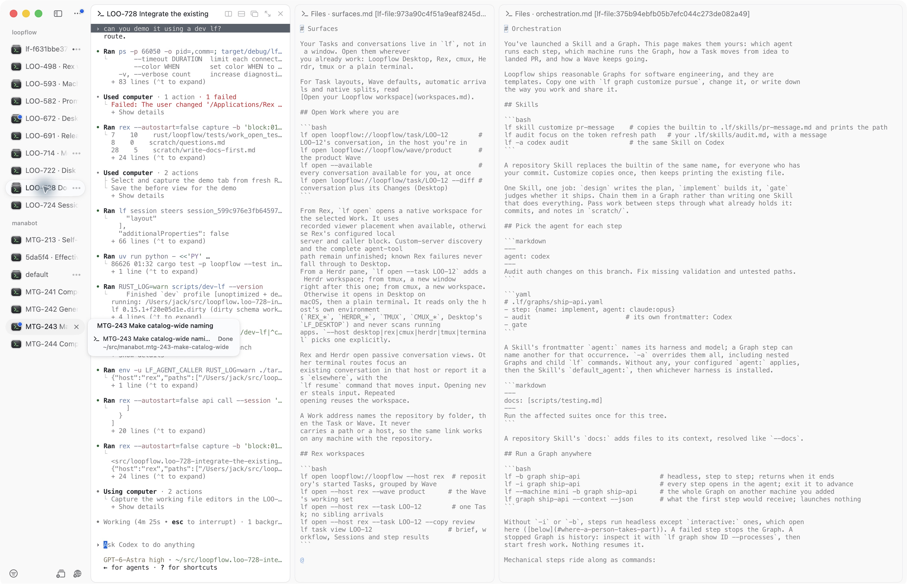

The original docs opened in Rex.
Observed: the development CLI displayed the original Markdown documents in working Rex editors. Jack Heart confirmed: “ok it opened”. This is historical evidence for explicit file opening. Jack Heart subsequently selected Desktop-only automatic presentation.
Evidence and exact limitations
1. Open the original files
RUST_LOG=warn scripts/dev-lf --version # Then, from a direct shell in the Task checkout: ./target/debug/lf open --host rex --task LOO-728 \ --file docs/orchestration.md --file docs/surfaces.md
Expected: working editors beside the existing conversation. Observed: both docs displayed; the repeated first path reused its editor and presentation retained conversation focus. Build: 0.15.1+f20e05d1e.dirty, including the active repair.
This agent invoked the direct-shell demonstration with env -u LF_AGENT_CALLER. It is not proof of agent routing through this conversation’s older owner.


2. Separate the passed demo from the remaining proof
The earlier attempt failed because it launched an installed lf without task tool. The repair uses the shared editor policy directly. Original docs remained unchanged. The current-owner agent route and a live saved-correction implementation pass remain unverified here; the worker has separate isolated evidence.
3. Accepted automatic workflow
Jack Heart accepted Desktop-only automatic presentation on November 4: write the docs everywhere, present them in an already attached Desktop Files view, and otherwise report paths while implementation continues. Explicit terminal opening remains supported. A universal rendered viewer is outside this change.
Demo/review still owns configured Desktop proof: original-file rendering, draft preservation on repeat, saved correction readback, recovery and conversation continuity. This earlier Rex demo does not establish those claims.